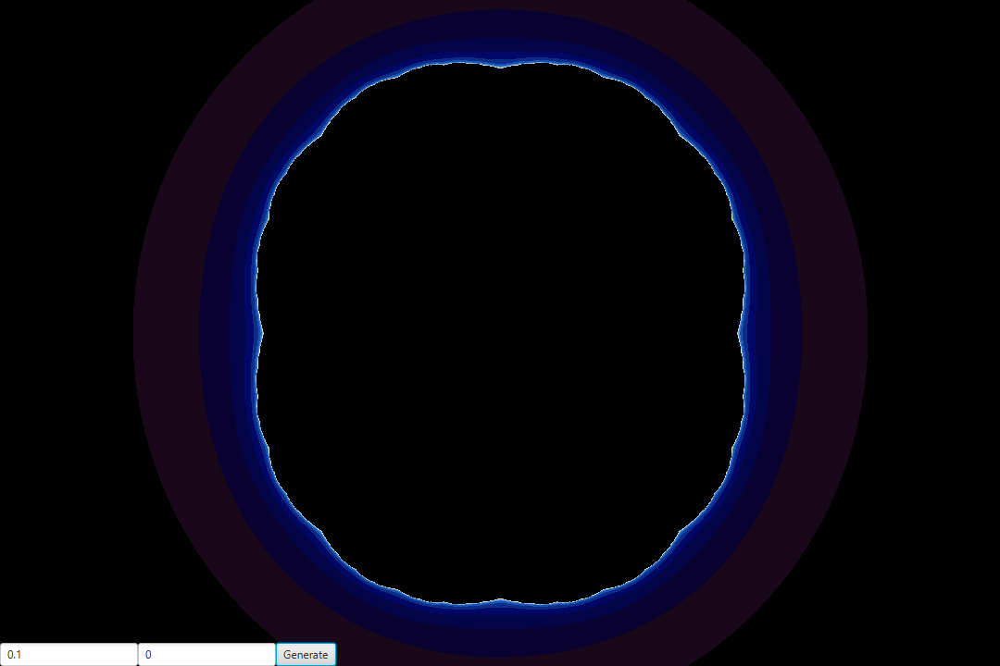
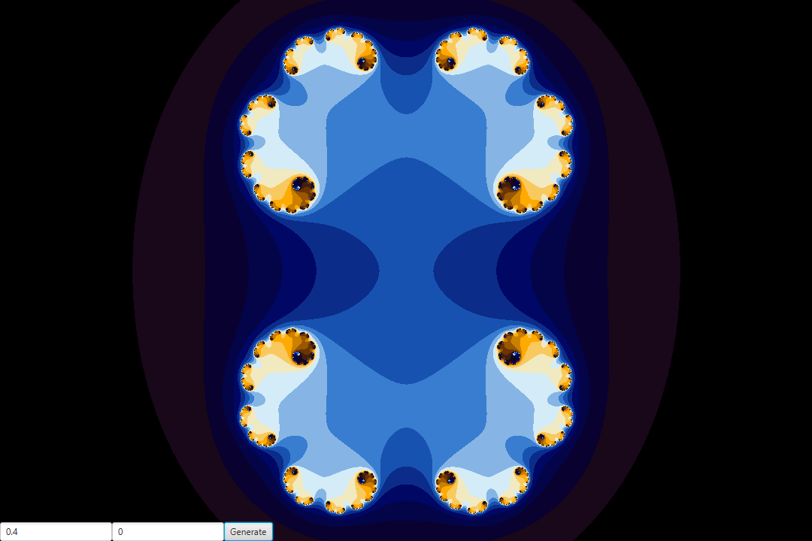
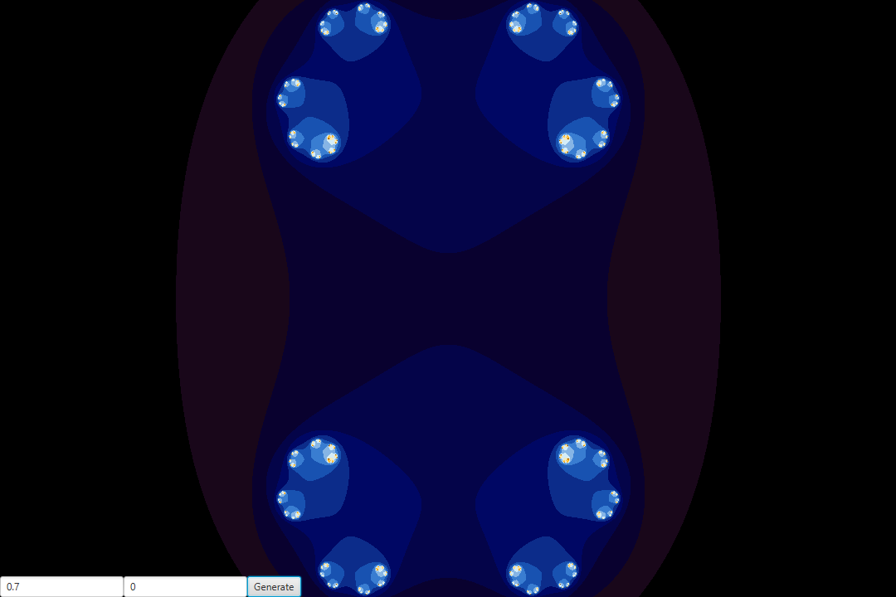
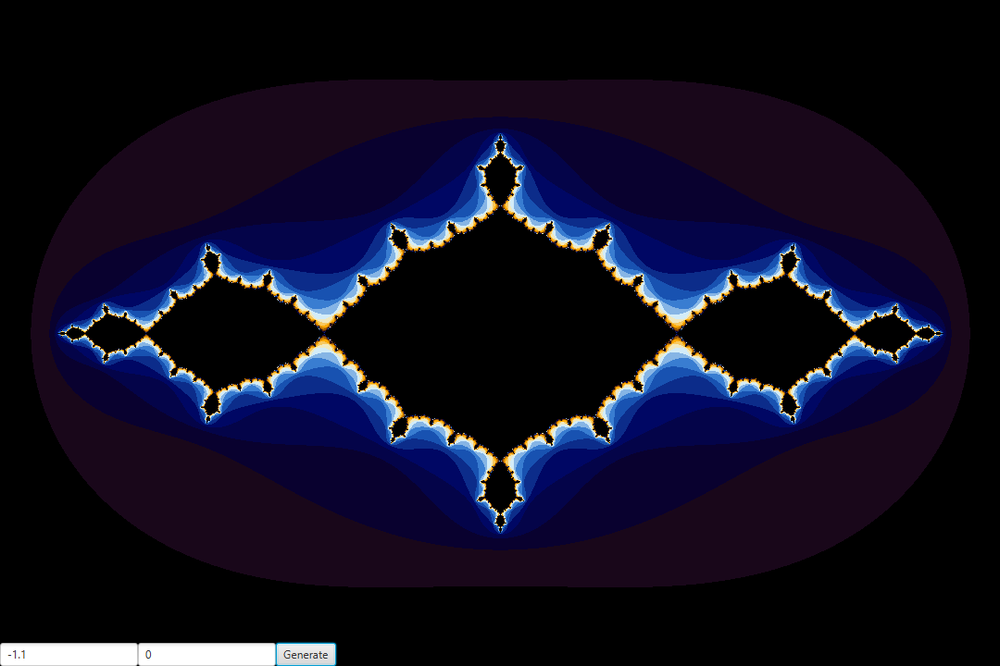

Images
Here you can see some image that I made in my application with different value for c :
(has you can see, little change can do a lot of difference)
On this slide, you can see the symmetry when we set the imaginary to 0 :
c = 0 + 0 i

c = 0.1 + 0 i
c = 0.2 + 0 i
c = 0.3 + 0 i

c = 0.4 + 0 i
c = 0.5 + 0 i
c = 0.6 + 0 i

c = 0.7 + 0 i
c = 0.8 + 0 i
c = 0.9 + 0 i
c = 1 + 0 i
c = -1.5 + 0 i

c = -1.4 + 0 i
c = -1.3 + 0 i
c = -1.2 + 0 i

c = -1.1 + 0 i
c = -1 + 0 i
c = -0.9 + 0 i
c = -0.8 + 0 i
c = -0.7 + 0 i
c = -0.6 + 0 i
c = -0.5 + 0 i
c = -0.4 + 0 i
c = -0.3 + 0 i
c = -0.2 + 0 i
c = -0.1 + 0 i